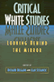
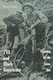

|
Upon the Ruins of Liberty
Slavery, the President's House at Independence National Historical Park, and Public Memory
Aden, Roger C.
New in Paperback!
246 pp • 6x9 • Spring 2017
paper 978-1-4399-1200-3
cloth 978-1-43991-199-0 |
|
From Slave Ship to Supermax
Mass Incarceration, Prisoner Abuse, and the New Neo-Slave Novel
Alexander, Patrick Elliot
266 pp • 6x9 • Fall 2017
paper 978-1-4399-1415-1
cloth 978-1-4399-1414-4 |

|
Black
Power, White Blood
The Life and Times of Johnny Spain
Andrews, Lori
352 pp • 5.5x8.25 • Fall 1999
paper 978-1-56639-750-6
|
|
The
Afrocentric Idea
Asante, Molefi Kete
Revised and Expanded Edition
256 pp • 5.5x8.2 • Fall 1997
paper 978-1-56639-595-3
cloth 978-1-56639-594-6
|
|
African
Intellectual Heritage
A Book of Sources
edited by Asante, Molefi Kete and Abu S. Abarry
848 pp • 7x10 • Fall 1995
paper 978-1-56639-403-1
cloth 978-1-56639-402-4 |

|
Philadelphia Freedoms
Black American Trauma, Memory, and Culture after King
Awkward, Michael
264 pp • 6x9 • Fall 2013
paper 978-1-4399-0709-2
cloth 978-1-4399-0708-5 |
|
Looking
Up at Down
The Emergence of Blues Culture
Barlow, William
464 pp • Spring 1989
paper 978-0-87722-722-9
cloth 978-0-87722-583-6 |

|
Voice
Over
The Making of Black Radio
Barlow, William
334 pp • 6x9 • Fall 1998
paper 978-1-56639-667-7
cloth 978-1-56639-666-0
|

|
Behind the Mask of the Strong Black Woman
Voice and the Embodiment of a Costly Performance
Beauboeuf-Lafontant, Tamara
194 pp • 5.5x8.25 • Fall 2009
paper 978-1-59213-668-1
cloth 978-1-59213-667-4
|

|
Softly, with Feeling
Joe Wilder and the Breaking of Barriers in American Music
Berger, Edward
400 pp • 6x9 •
Spring 2014
cloth 978-1-4399-1127-3 |
 |
Suffering and Sunset
World War I in the Art and Life of Horace Pippin
Bernier, Celeste-Marie
New in Paperback!
552 pp • 6.125x9.25 • Fall 2017
paper 978-1-4399-1274-4
cloth 978-1-4399-1273-7 |
|
Promiseland
A Century of Life in a Negro Community
Bethel, Elizabeth Rauh
329 pp • Spring 1981
paper 978-0-87722-275-0
cloth 978-0-87722-211-8 |

|
Tasting Freedom
Octavius Catto and the Battle for Equality in Civil War America
Biddle, Daniel R. and Murray Dubin
New in Paperback!
632 pp • Fall 2017
paper 978-1-4399-1349-9
cloth 978-1-59213-465-6
|

|
Still
the Big News
Racial Oppression in America
Blauner, Bob
288 pp • 6x9 • Spring 2001
paper 978-1-56639-874-9
cloth 978-1-56639-873-2
|
|
Catalog
of the Charles L. Blockson Afro-American Collection of the Temple
University Libraries
Blockson, Charles L., introduction by Dorothy Porter Wesley
820 pp • Fall 1990
cloth 978-0-87722-749-6 |

|
Black
Women Writing Autobiography
A Tradition Within a Tradition
Braxton, Joanne M.
240 pp • Fall 1989
paper 978-0-87722-803-5
cloth 978-0-87722-639-0 |

|
Between
Race and Empire
African-Americans and Cubans before the Cuban Revolution
edited by Brock, Lisa and Digna Casteñada Fuertes, foreword
by Manning Marable
289 pp • 6x9 • Spring 1998
paper 978-1-56639-587-8
cloth 978-1-56639-586-1
|
|
Tensions in the American Dream
Rhetoric, Reverie, or Reality
Bush, Melanie E. L. and Roderick D. Bush
258 pp • 6x9 • Fall 2014
paper 978-1-59213-838-8
cloth 978-1-59213-837-1 |
|
The End of White World Supremacy
Black Internationalism and the Problem of the Color Line
Bush, Roderick
264 pp • 6x9 • Spring 2009
paper 978-1-59213-573-8
cloth 978-1-59213-572-1
|
|
Leadership,
Conflict, and Cooperation in Afro-American Social Thought
Childs, John Brown
224 pp • Fall 1988
paper 978-1-56639-085-9
cloth 978-0-87722-581-2 |
|
Legacy and Legitimacy
Black Americans and the Supreme Court
Clawson, Rosalee A. and Eric N. Waltenburg
232 pp • 5.5x8.25 • Fall 2008
paper 978-1-59213-903-3
cloth 978-1-59213-902-6
|

|
Jesus, Jobs, and Justice
African American Women and Religion
Collier-Thomas, Bettye
736 pp • 6.25x9.125 • Fall 2013
paper 978-1-4399-1105-1
|
|
From
Black Power to Hip Hop
Racism, Nationalism, and Feminism
Collins, Patricia Hill
256 pp • 6x9 • Fall 2005
paper 978-1-59213-092-4
cloth 978-1-59213-091-7
|
|
On Intellectual Activism
Collins, Patricia Hill
278 pp • 6x9 • Fall 2012
paper 978-1-4399-0961-4
cloth 978-1-4399-0960-7
|

|
Black
Corporate Executives
The Making and Breaking of a Black Middle Class
Collins, Sharon M.
216 pp • 5.5x8.25 • Fall 1996
paper 978-1-56639-474-1
cloth 978-1-56639-473-4
|

|
Bridging
the Americas
The Literature of Paule Marshall, Toni Morrison, and Gayl Jones
Coser, Stelamaris
240 pp • 5.5x8.25 • Fall 1994
paper 978-1-56639-267-9
cloth 978-1-56639-266-2 |
|
Ain't
Gonna Let Nobody Turn Me Round
The Pursuit of Racial Justice in the Rural South
Couto, Richard A.
440 pp • 5.5x8.25 • Fall 1994
paper 978-1-56639-004-0
cloth 978-0-87722-806-6 |
|
Shades
of Black
Diversity in African American Identity
Cross, William E.
296 pp • Spring 1991
paper 978-0-87722-949-0
cloth 978-0-87722-759-5 |
|
The Man-Not
Race, Class, Genre, and the Dilemmas of Black Manhood
Curry, Tommy J.
294 pp • 6x9 • Spring 2017
paper 978-1-4399-1486-1
cloth 978-1-4399-1485-4
|
|
More
Than Black?
Multiracial Identity and the New Racial Order
Daniel, G. Reginald
280 pp • 7x10 • Fall 2001
paper 978-1-56639-909-8
cloth 978-1-56639-908-1
|

|
Detroit
Race and Uneven Development
Darden, Joe T., Richard Child Hill, June Thomas and Richard Thomas
336 pp • Fall 1987
paper 978-0-87722-776-2
cloth 978-0-87722-485-3
|
 |
Critical
White Studies
Looking Behind the Mirror
edited by Delgado, Richard and Jean Stefancic
704 pp • 7x10 • Spring 1997
paper 978-1-56639-532-8
cloth 978-1-56639-531-1
|

|
Black Regions of the Imagination
African American Writers between the Nation and the World
Dunbar, Eve
232 pp • 5.5x8.25 • Fall 2012
paper 978-1-4399-0943-0
cloth 978-1-4399-0942-3
|

|
Muhammad Ali
The Making of an Icon
Ezra, Michael
248 pp • 6x9 • Fall 2008
paper 978-1-59213-662-9
cloth 978-1-59213-661-2
|
|
Proceedings
of the Black State Conventions, 1865-1900
Volume I
edited by Foner, Philip S. and George E. Walker
Spring 1980
cloth 978-0-87722-145-6 |
|
Proceedings
of the Black State Conventions, 1840-1865
Volume II
edited by Foner, Philip S. and George E. Walker
405 pp • Fall 1985
cloth 978-0-87722-149-4 |
|
American
Communism and Black Americans
A Documentary History, 1930-1934, Volume 2
Foner, Philip S. and Herbert Shapiro
416 pp • Fall 1990
cloth 978-0-87722-761-8 |

|
Black
Workers
A Documentary History from Colonial Times to the Present
edited by Foner, Philip S. and Ronald L. Lewis
400 pp • Fall 1988
paper 978-0-87722-554-6
cloth 978-0-87722-592-8 |
|
Pimping Fictions
African American Crime Literature and the Untold Story of Black Pulp Publishing
Gifford, Justin
216 pp • 6x9 • Spring 2013
paper 978-1-4399-0811-2
cloth 978-1-4399-0810-5
|
 |
TVA
and Black Americans
Planning for the Status Quo
Grant, Nancy L.
240 pp • Fall 1989
cloth 978-0-87722-626-0
|
|
Sparks
from the Anvil of Oppression
Philadelphia's African Methodists and Southern Migrants, 1890-1940
Gregg, Robert
272 pp • 6x9 • Fall 1993
paper 978-1-56639-664-6
cloth 978-1-56639-063-7 |
|
An
Essay on African Philosophical Thought
The Akan Conceptual Scheme
Gyekye, Kwame
Revised Edition
296 pp • 5.5x8.25 • Fall 1995
paper 978-1-56639-380-5
cloth 978-1-56639-383-6
|
|
Swimming Against the Tide
African American Girls and Science Education
Hanson,
Sandra L.
224 pp • 5.5x8.25 • Fall 2008
paper 978-1-59213-622-3
cloth 978-1-59213-621-6
|
|
The
Philosophy of Alain Locke
Harlem Renaissance and Beyond
edited by Harris, Leonard
344 pp • Fall 1988
paper 978-0-87722-829-5
cloth 978-0-87722-584-3 |
|
From
Mammies to Militants
Domestics in Black American Literature
Harris, Trudier
248 pp • Fall 1982
cloth 978-0-87722-279-8 |

|
Black
Theatre
Ritual Performance in the African Diaspora
edited by Harrison, Paul Carter, Victor Leo Walker II and Gus Edwards
432 pp • 7x10 • Spring 2002
paper 978-1-56639-944-9
cloth 978-1-56639-943-2
|
 |
The Boxing Scene
Hauser, Thomas
256 pp • 6x9 • Fall 2008
paper 978-1-59213-977-4
cloth 978-1-59213-976-7
|

|
Jookin'
The Rise of Social Dance Formations in African-American Culture
Hazzard-Gordon, Katrina
248 pp • Spring 1990
paper 978-0-87722-956-8
cloth 978-0-87722-613-0
|
|
African-American
Reflections on Brazil's Racial Paradise
edited by Hellwig, David J.
276 pp • 5.5x8.25 • Spring 1992
cloth 978-0-87722-892-9 |

|
Bass
Line
The Stories and Photographs of Milt Hinton
Hinton, Milt and David G. Berger
328 pp • 10.5x9.5 • Fall 1988
paper 978-0-87722-681-9
cloth 978-0-87722-518-8
|
|
Savoring the Salt
The Legacy of Toni Cade Bambara
edited by Holmes, Linda Janet and Cheryl A. Wall
320 pp • 6x9 • Fall 2007
paper 978-1-59213-625-4
cloth 978-1-59213-624-7
|

|
Cold War in a Hot Zone
The United States Confronts Labor and Independence Struggles in the British West Indies
Horne, Gerald
272 pp • 6x9 • Spring 2007
paper 1 978-1-59213-628-5
cloth 978-1-59213-627-8
|
|
The End of Empires
African Americans and India
Horne, Gerald
274 pp • 6x9• Fall 2008
paper 978-1-59213-900-2
cloth 978-1-59213-899-9
|

|
Black Communists Speak on Scottsboro
A Documentary History
edited by Howard, Walter T.
208 pp • 5.5x8.25 • Fall 2007
cloth 978-1-59213-597-4
|
|
We Shall Be Free!
Black Communist Protests in Seven Voices
Howard, Walter T.
220 pp • 5.5x8.25 • Spring 2013
cloth 978-1-4399-0859-4 |
|
The
African American Jeremiad
Appeals for Justice in America
Howard-Pitney, David
Revised and Expanded Edition
288 pp • 5.5x8.25 • Fall 2005
paper 978-1-59213-415-1
cloth 978-1-59213-328-4
|
|
The
Disenfranchisement of Ex-Felons
Hull, Elizabeth A., foreword by Representative John Conyers,
Jr.
232 pp • 5.5x8.25 • Fall 2005
paper 978-1-59213-185-3
cloth 978-1-59213-184-6
|

|
Sisterhood
Denied
Race, Gender, and Class in a New South Community
Janiewski, Dolores E.
272 pp • 6x9 • Fall 1984
paper 978-1-56639-006-4
cloth 978-0-87722-361-0 |
|
Yo'
Mama!
New Raps, Toasts, Dozens, Jokes and Children's Rhymes from Urban
Black America
edited by Jemie, Onwuchekwa
344 pp • 6x9 • Spring 2003
paper 978-1-59213-029-0
cloth 978-1-59213-028-3
|
|
Wheelchair Warrior
Gangs, Disability, and Basketball
Juette, Melvin and Ronald J. Berger
192 pp • 5.5x8.25 • Spring 2008
paper 978-1-59213-475-5
cloth 978-1-59213-474-8
|

|
Men's College Athletics and the Politics of Racial Equality
Five Pioneer Stories of Black Manliness, White Citizenship, and American Democracy
Kaliss, Gregory J.
248
pp • 6x9 • Spring 2012
paper 978-1-4399-0857-0
cloth 978-1-4399-0856-3
|

|
Body Language
Sisters in Shape, Black Women's Fitness, and Feminist Identity Politics
Lau, Kimberly J.
204 pp • 5.5x8.25 • Fall 2011
paper 978-1-4399-0309-4
cloth 978-1-4399-0308-7
|
|
The
Underclass Question
edited by Lawson, Bill E., foreword by William Julius Wilson
232 pp • 6x9 • Spring 1992
paper 978-1-56639-062-0
cloth 978-0-87722-922-3 |
|
Running
for Freedom
Civil Rights and Black Politics in White America, 1941-1988
Lawson, Steven F.
320 pp • Fall 1990
cloth 978-0-87722-792-2 |

|
A
Life in the Struggle
Ivory Perry and the Culture of Opposition
Lipsitz, George
Revised Edition
320 pp • 6x9 • Spring 1995
paper 978-1-56639-321-8
|
|
How Racism Takes Place
Lipsitz, George
320 pp • 6x9 • Spring 2011
paper 978-1-4399-0256-1
cloth 978-1-4399-0255-4
|
|
The
Possessive Investment in Whiteness
How White People Profit from Identity Politics
Lipsitz, George
Revised and Expanded Edition
312 pp • 6x9 • Spring 1998
paper 978-1-59123-494-6
cloth 978-1-59213-493-9
|
|
The
Parker Sisters
A Border Kidnapping
Maddox, Lucy
256 pp • 6.125x9 • Spring 2016
cloth 978-1-4399-1318-5
|

|
Frankie Manning
Ambassador of Lindy Hop
Manning, Frankie and Cynthia R. Millman
312 pp • 6x9 • Spring 2007
paper 978-1-59213-564-6
cloth 978-1-59213-563-9 |
|
The City on the Hill from Below
The Crisis of Prophetic Black Politics
Marshall, Stephen
250 pp • 6x9 • Spring 2011
paper 978-1-4399-0656-9
cloth 978-1-4399-0655-2
|

|
Black
City Cinema
African American Urban Experiences in Film
Massood, Paula J.
280 pp • 6x9 • Fall 2002
paper 978-1-59213-003-0
cloth 978-1-59213-002-3
|
|
Integrating
the City of Medicine
Blacks in Philadelphia Health Care, 1910-1965
McBride, David
320 pp • Fall 1988
cloth 978-0-87722-546-1 |

|
Black
Power Ideologies
An Essay in African American Political Thought
McCartney, John T.
264 pp • 6x9 • Spring 1992
paper 978-1-56639-145-0
cloth 978-0-87722-914-8 |

|
Black
Baltimore
A New Theory of Community
McDougall, Harold A.
272 pp • 6x9 • Spring 1993
paper 978-1-56639-193-1
cloth 978-1-56639-037-8
|

|
Unbought and Unbossed
Transgressive Black Women, Sexuality, and Representation
Melancon, Trimiko
256 pp • 5.5x8.5 • Fall 2014
paper 978-1-43991-146-4
cloth 978-1-43991-145-7 |
|
Re-Viewing
James Baldwin
Things Not Seen
edited by Miller, D. Quentin, foreword by David Adams Leeming
312 pp • 6x9 • Fall 1999
paper 978-1-56639-737-7
cloth 978-1-56639-736-0
|

|
Swingin'
at the Savoy
The Memoir of a Jazz Dancer
Miller, Norma with Evette Jensen
304 pp • 6x9 • Spring 2001
paper 978-1-56639-849-7
|
|
Children
of Strangers
The Stories of a Black Family
Morgan, Kathryn L., afterword by Otey M. Scruggs
122 pp • 5.5x8.25 • Fall 1980
paper 978-0-87722-240-8
cloth 978-0-87722-203-3 |
|
Un-American
W.E.B. Du Bois and the Century of World Revolution
Mullen, Bill V.
264 pp • 6x9 • Fall 2015
paper 978-1-4399-1110-5
cloth 978-1-4399-1109-9 |
|
Orixás
Os Deuses Vivos da África
Orishas
The Living Gods of Africa in Brazil
do Nascimento, Abdias, foreword by Molefi Kete Asante
170 pp • 10x11 • Fall 1997
cloth 978-85-85853-013 |

|
The
Beat of My Drum
An Autobiography
Olatunji, Babatunde with Robert Atkinson and Akinsola Akiwowo,
foreword by Joan Baez, introduction by Eric Charry
272 pp • 6x9 • Spring 2005
paper 978-1-59213-354-3
cloth 978-1-59213-353-6
|

|
Greening Africana Studies
Linking Environmental Studies with Transforming Black Experiences
Patterson, Rubin
258 pp • 5.5x8.25 • Fall 2014
paper 978-1-43990-872-3
cloth 978-1-43990-871-6 |
|
Zora
Neale Hurston and a History of Southern Life
Patterson, Tiffany Ruby
248 pp • 5.5x8.25 • Spring 2005
paper 978-1-59213-290-4
cloth 978-1-59213-289-8
|

|
Droppin'
Science
Critical Essays on Rap Music and Hip Hop Culture
edited by Perkins, William Eric
288 pp • 6x9 • Fall 1995
paper 978-1-56639-362-1
cloth 978-1-56639-361-4
|
|
African
American Perspectives on Political Science
Rich, Wilber C., foreword by Charles V. Hamilton
456 pp • 6x9 • Fall 2006
paper 978-1-59213-109-9
cloth 978-1-59213-108-2
|

|
Fire on the Prairie
Harold Washington, Chicago Politics, and the Roots of the Obama Presidency
Rivlin, Gary
290 pp • 6x9 • Fall 2012
paper 978-1-4399-0492-3
cloth 978-1-4399-0491-6
|

|
A City within a City
The Black Freedom Struggle in Grand Rapids, Michigan
Robinson, Todd E.
248 pp • 6x9 • Fall 2012
paper 978-1-4399-0922-5
cloth 978-1-4399-0921-8
|

|
All
is Never Said
The Story of Odette Harper Hines
Rollins, Judith
288 pp • 6x9 • Spring 1995
paper 978-1-56639-308-9
cloth 978-1-56639-307-2
|
|
Love's
Revolution
Interracial Marriage
Root, Maria P. P.
240 pp • 6x9 • Fall 2000
paper 978-1-56639-826-8
cloth 978-1-56639-825-1
|
|
Mavericks, Money, and Men
The AFL, Black Players, and the Evolution of Modern Football
Ross, Charles K.
212 pp • 6x9 • Spring 2016
paper 978-1-4399-1307-9
cloth 978-1-4399-1306-2
|

|
The
Origins of Southern Sharecropping
Royce, Edward
288 pp • 5.5x8.25 • Fall 1993
cloth 978-1-56639-069-9 |
|
Press
Box Red
The Story of Lester Rodney, the Communist Who Helped Break the
Color Line in American Sports
Silber, Irwin, foreword by Jules Tygiel
256 pp • 6x9 • Spring 2003
paper 978-1-56639-974-6
cloth 978-1-56639-973-9
|

|
The
Homoerotic Photography of Carl Van Vechten
Public Face, Private Thoughts
Smalls, James
240 pp • 7x10 • Spring 2006
cloth 978-1-59213-305-5
|
|
Neither
Separate Nor Equal
Women, Race, and Class in the South
edited by Smith, Barbara Ellen
296 pp • 6x9 • Spring 1999
paper 978-1-56639-680-6
cloth 978-1-56639-679-0 |

|
Silent Gesture
Smith, Tommie with David Steele
288 pp • 6x9 • Spring 2008
paper 978-1-59213-640-7
cloth 978-1-59123-639-1
|
|
African American Writing
A Literary Approach
Sollors, Werner
296 pp • 6x9 • Spring 2016
paper 978-1-4399-1337-6
cloth 978-1-4399-1336-9
|
|
Chicago
Race, Class, and the Response to Urban Decline
Squires, Gregory D., Larry Bennett, Kathleen McCourt and Philip
Nyden
248 pp • Fall 1987
paper 978-0-87722-617-8
cloth 978-0-87722-487-7 |

|
Swing
Era New York
The Jazz Photographs of Charles Peterson
Stokes, W. Royal, photographs by Don Peterson, foreword by Stanley
Dance
232 pp • 10x8 • Fall 1994
paper 978-1-56639-464-2
cloth 978-1-56639-227-3 |

|
Vessels
of Evil
American Slavery and the Holocaust
Thomas, Laurence Mordekhai
232 pp • 5.5x8.25 • Fall 1993
paper 978-1-56639-100-9
cloth 978-1-56639-093-4 |

|
Crossroads,
Directions, and a New Critical Race Theory
edited by Valdes, Francisco, Jerome McCristal Culp and Angela P.
Harris
440 pp • 7x10 • Fall 2001
paper 978-1-56639-930-2
cloth 978-1-56639-929-6
|

|
Fela
The Life and Times of an African Musical Icon
Veal, Michael E.
352 pp • 7x10 • Spring 2000
paper 978-1-56639-765-0
cloth 978-1-56639-764-3
|

|
How
I Got Over
Clara Ward and the World-Famous Ward Singers
Ward-Royster, Willa, as told by Toni Rose, foreword by Horace Clarence
Boyer
263 pp • 6x9 • Spring 2000
paper 978-1-56639-490-1
cloth 978-1-56639-489-5
|

|
"Other
Sheep I Have"
The Autobiography of Father Paul M. Washington
Washington, Paul M. with David Mcl. Gracie, afterword by Barbara
Harris
280 pp • 5.5x8.25 • Spring 1994
paper 978-1-56639-178-8
cloth 978-1-56639-177-1
|

|
Dark
Continent of Our Bodies
Black Feminism and the Politics of Respectability
White, E. Frances
208 pp • 5.5x8.25 • Spring 2001
paper 978-1-56639-880-0
cloth 978-1-56639-879-4
|

|
The
Black Female Body
A Photographic History
Willis, Deborah and Carla Williams
240 pp • 9x12 • Fall 2001
cloth 978-1-56639-928-9
|

|
Black Venus 2010
They Called Her "Hottentot"
edited by Willis, Deborah
288 pp • 7x10 • Spring 2010
paper 978-1-4399-0205-9
cloth 978-1-4399-0204-2
|
 |
Envisioning Emancipation
Black Americans and the End of Slavery
Willis, Deborah and Barbara Krauthamer
New in Paperback!
240 pp • 7x10 • Spring 2017
paper 978-1-4399-0986-7
cloth 978-1-4399-0985-0
|
|
Hope
and Dignity
Older Black Women of the South
narrator Wilson, Emily Herring, photographs by Susan Mullally Clark,
preface by Maya Angelou
224 pp • 7x9 • Spring 1983
paper 978-1-56639-017-0
cloth 978-0-87722-302-3 |
|
Philadelphia's
Black Elite
Activism, Accommodation, and the Struggle for Autonomy, 1787-1848
Winch, Julie
256 pp • 6x9 • Fall 1987
paper 978-1-56639-088-0
cloth 978-0-87722-515-7
|

|
No More Invisible Man
Race and Gender in Men's Work
Wingfield, Adia Harvey
212 pp • 5.5x8.25 • Fall 2012
paper 978-1-4399-0973-7
cloth 978-1-4399-0972-0
|
|
The Audacity of Hoop
Basketball and the Age of Obama
Wolff, Alexander
224 pp • 10x8 • Fall 2015
cloth 978-1-4399-1309-3 |

|
Samuel
Joseph May and the Dilemmas of the Liberal Persuasion, 1797-1871
Yacovone, Donald
300 pp • Spring 1991
cloth 978-0-87722-760-1 |
|
The Coolie Speaks
Chinese Indentured Laborers and African Slaves in Cuba
Yun, Lisa
336 pp • 6x9 • Fall 2007
paper 978-1-59213-582-0
cloth 978-1-59213-581-3
|
|
Race
and Mixed Race
Zack, Naomi
232 pp • 6x9 • Fall 1993
paper 978-1-56639-265-5
cloth 978-1-56639-064-4 |
|
Women
of Color in U.S. Society
edited by Zinn, Maxine Baca and Bonnie Thornton Dill
360 pp • 6x9 • Fall 1993
paper 978-1-56639-106-1
cloth 978-1-56639-105-4
|